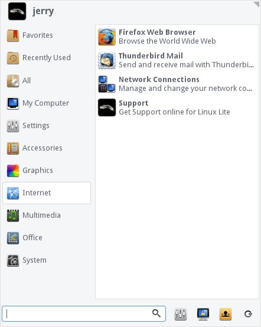

Welcome to Linux Lite - simple, fast, free.
Thank you for choosing the Linux Lite Operating System.
Version: 3.2 | Date published: 25th November, 2016
What's New: Updated information throughout the Help Manual
Authors: Jerry Bezencon, Bill Hahnen, Milos Pavlovic, Adam Grubbs, John Jenkins
Operating System
- Current Release Name: Linux Lite 3.2
- Architecture: 32bit and 64bit
- Software Base: Ubuntu 16.04.1 LTS
- Desktop Environment: XFCE 4.12
- Media Type: DVD, 2gb or larger USB device
Keyboard Shortcuts
- Ctrl+Alt+T - opens a terminal.
- Ctrl+Alt+Del - opens the logout dialogue.
- Ctrl+Shift+Esc - opens the Task Manager.
- Windows key - opens the Menu.
- Windows key+H - opens your home folder.
- Windows key+L - locks the screen.
- Alt+F2 - opens the Application Finder dialogue box.
- Printscreen key - opens the screenshot program.
Accessories Menu
Application Finder
Create System Report
Forums
General Software Support
Graphics Menu
Help Manual
Included Software
Install Updates
Internet Menu
Keyboard Function
Menus
Multimedia Menu
My Computer Menu
Office Menu
Post Installation
Secure Boot
Share Hardware Configuration
Social Networks
Support
System Menu
UEFI
Included Software
Firefox Web Browser, Thunderbird Email, LibreOffice Writer (Word), LibreOffice Calc (Excel), LibreOffice Impress (Powerpoint), VLC Media Player, Gimp Image Editor, Text Editor, PDF Viewer, CD/DVD Burner, Image Scanner, Firewall, Backups, Bluetooth Manager, Partition Drives, Resource Usage, Task Manager, Driver Installer, Systemback, Whisker Menu, Lite User Manager, Lite Software, Lite Welcome, Lite Tweaks, Lite Themes, Lite Upgrade, Lite Widget, Lite Info (Share Hardware Configuration), Help Manual.
Post Installation
The first thing you should do after a new install is click on Menu, Favorites, Install Updates. Next if you have any wireless, wired, graphics card devices or other hardware devices, click on Menu, Settings, Install Drivers. Please read the information provided very carefully before choosing a suitable driver. It is usually best to choose the recommended driver. You can look through how to connect to the internet by clicking here. More information on drivers can be found here.
Secure Boot
Linux Lite recommends that you set your Bios to Legacy. If you already have Windows installed and you wish to dual boot with Linux Lite, we recommend you set your Bios to Legacy mode then reinstall Windows, and then Linux Lite. Linux Lite does not support or advocate the use of Secure Boot.
Disable Secure Boot in Windows
See the following link for generic instructions on how to disable Secure Boot in Windows (configuration will differ slightly depending on the manufacturer)
(Internet connection required to view video)
UEFI
Linux Lite can work with UEFI, the solution requires an intermediate knowledge of linux. A tutorial can be found here:
(Internet connection required to view video)
Changing Bios mode from UEFI to Legacy
See the following link for generic instructions on how to change the BIOS Mode from UEFI to Legacy (configuration will differ slightly depending on the manufacturer)
(Internet connection required to view video)
Keyboard Function
On some laptops you may have to enable Numlock as it is disabled by default. You could also try FN + Numlock to use your keys, or FN + one of the F keys across the top of your keyboard. This varies from computer to computer. Some examples follow:
Fn + F11 (Acer, Toshiba, Samsung)Shift + Num Lock
Fn + Num Lock (Sony, Gateway)
Fn + F11 + Scroll lock
Fn + F8 (HP)
Ctrl + F11
Fn + Shift + Num Lock
Fn + F4 (Dell)
Fn + Nmlk (Lenovo, ASUS)
Create System Report
Linux Lite comes with the Create System Report tool found under Menu, System. This tool helps our Support team more accurately identify any problems you may be having, thus providing you with better service. Click here to learn more about this.
Share Hardware Configuration
The purpose of the Linux Lite Hardware Database, is to give people an idea of different computer configurations from within a Linux Lite Series. The Linux Lite Hardware Database displays Make and Model, CPU, Graphics, Audio, Network and Storage technical specifications. This provides a snapshot of the kind of computers people are able to use with Linux Lite. No personal or security related information is gathered or displayed. Click on Menu, System, Share Hardware Configuration to share your hardware and help others. Click here to go to the Linux Lite Hardware Database.
Support
If you cannot find the answer to your question in this Manual, please choose from the following:
Forums
Click here to get support for Linux Lite on the Linux Lite Forums. Please search the Forums before posting your question, chances are the question you have, has previously been answered. When posting for support, make your title descriptive as possible. Within the post, specify details of the problem, describe the procedure you followed that led to it, steps you tried in order to resolve the issue, and any error messages you may have encountered at various stages in the process. Also include information on your computer - model number, approximate age, CPU, RAM, etc. (The Create System Report tool is good for that.) The more info you provide the easier it will be for people to evaluate the situation and offer appropriate guidance.
General Software Support
If you are using a program for example Firefox, the first port of call should always be the developer and or creator/s directly. Most programs have a Help menu somewhere on their program. The Help menu will then have a link to their support area. This is where the experts are and you should receive excellent support. If after trying this you are still getting nowhere, feel free to use one of our above services. Because Linux Lite is based on the popular Ubuntu Operating System, many questions can also be answered by simply entering the issue you are having into your favorite search engine.
Social Networks
Facebook: https://www.facebook.com/linuxliteos
Twitter: https://twitter.com/LinuxLite
Google+: https://plus.google.com/+linuxliteos/
LinkedIn: http://www.linkedin.com/in/jerrybezencon
Menus
The menu system on Linux Lite has been greatly simplified to make navigation intuitive.
System Menu
Lite Software - Gives you the option to install or remove common applications like a video editor, an instant
messaging client etc. Installing and Removing software is easy, simply follow the onscreen instructions.
Create System Report - Creates a comprehensive hardware and software report for your system.
Install/Remove Software - Install and Remove software with Synaptic Package Manager.
Lite Tweaks - Provides system wide cleaning of your computer, and other useful tools.
Login Settings - Enable or disable automatic login for 1 user.
Network Share Settings - Here you can configure your computer to connect to your Windows shares.
NTFS Configuration Tool - Allows you to access ntfs file systems on external drives (enabled by default).
Partition Drives - View and edit your hard drive partitions with GParted program.
Printers - Install and set up printers.
Resource Usage - Shows you how much cpu and memory your computer is using. Also displays system processes.
Share Hardware Configuration - Share hardware information with the community.
Systemback - System restore and creation application, Systemback.
System Information - View hardware like your cpu, memory, graphics card etc in detailed information.
System Log - View system your logs, helps with troubleshooting.
Task Manager - An overview of currently running computer processes. You can kill applications here to.
Office Menu
New Document - Opens LibreOffice Writer, an application similar to Microsoft Word.
New Presentation - Opens LibreOffice Impress, an application similar to Microsoft PowerPoint.
New Spreadsheet - Opens LibreOffice Calc, an application similar to Microsoft Excel.
PDF Viewer - View PDF documents with this application.
Multimedia Menu
CD/DVD Burner - A fully featured CD & DVD burning program - XFBurn.
VLC Media Player - A fantastic all around media player, play mp3's, avi's, mkv's etc. Plays all your media files.
Volume Control - Individually set volume levels for each program that is running and configure your sound devices.
Internet Menu

Firefox Web Browser - Browse the internet.
Network Connections - Manage and connect to wired, wireless, 3g and VPN networks.
Support - Get Support at the Linux Lite Forums.
Thunderbird Mail - Email program, send and receive email.
Graphics Menu
GIMP Image Editor - A powerful, and fully featured image manipulation program with features similar to Photoshop.
Image Viewer - Preview your pictures with this viewer.
Scanner - Scan your documents and pictures.
Accessories Menu
Application Finder - A handy pop up menu to all your programs, by category and in alphabetical order.
Archive Manager - A utility to compress and uncompress zip files etc.
Backups - A simple to use backup solution for your computer.
Calculator - A basic calculator also capable of scientific functions.
File Search - Locate files and folders on your computer.
Home Folder - Your home folder.
Screenshot - Take a screenshot of a window, and selected area, or the entire desktop.
Terminal - Sometimes referred to as the 'shell' a terminal is a place to input various system commands.
Text Editor - A basic text editor, a program to type text into. Can also be used to create and/or edit configuration files.
My Computer Menu
Conveniently placed shortcuts to your file system and all the folders in your home directory.
Application Finder
Clicking on this, you can run any program that is installed on the computer by its name.
Help Manual
A link to this Help manual.
Install Updates
Checks for updates for Linux Lite. Click here to learn more about installing software and updates.